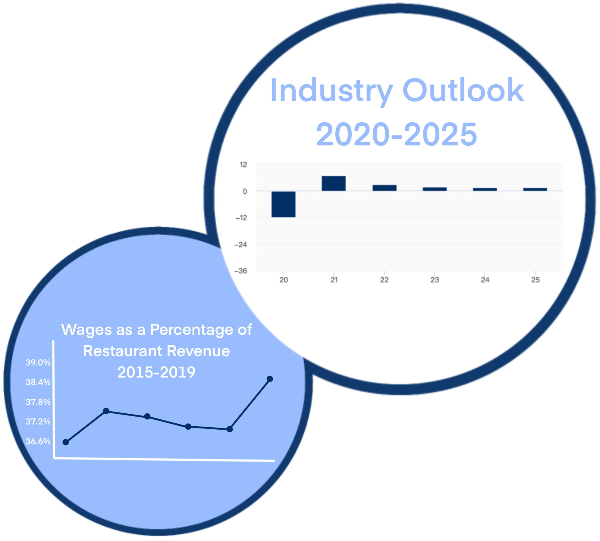
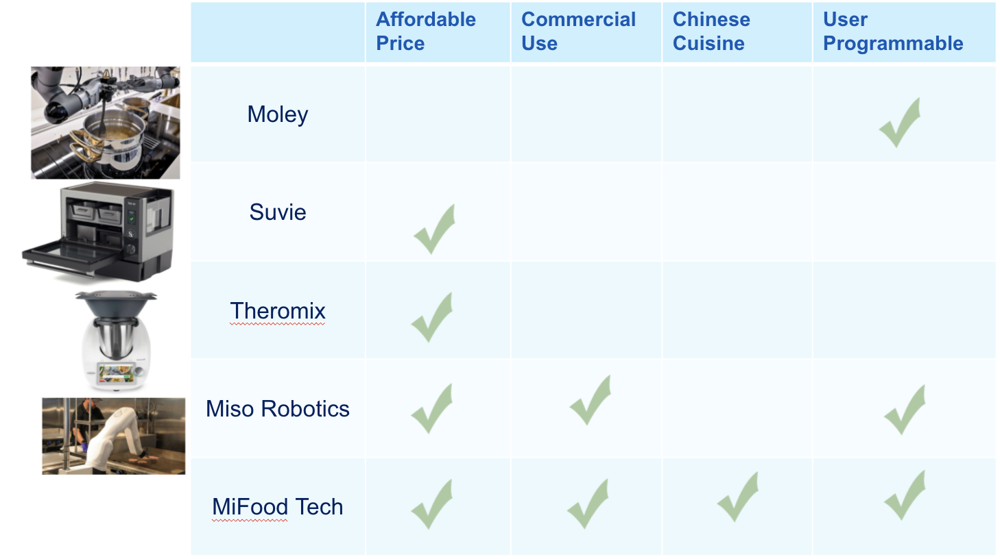

There is a substantial market size due to the strong demand for Chinese cuisine in the United States
In fact, more than 42% of American adults consume Chinese cuisine a few times a year
There are more than 40,000 Chinese restaurants in the U.S. This number is greater than all the McDonald's, KFCs, Pizza Huts, Taco Bells, and Wendy's locations in America combined.
This is the Total Available Market. There are over 1 million restaurants in the United States which generate over $659 Billion each year
This is the Serviceable Available Market. Of the 1 million restaurants in the United States, there are over 40,000 Chinese restaurants and even more restaurants that serve other Asian cuisines. These generate a revenue of $15.4 billion a year.
This is the Serviceable Obtainable Market. We believe that this is the portion of the SAM that we can capture. It is a total of 12,000 Chinese restaurants which would generate about $120 million a year.

Industry Outlook
There is massive room for growth in the industry
The U.S Chinese restaurant industry's revenue is increasing at an annualized rate of 2.9%
It is predicted to be worth up to 17.7 billion in 2025
The recent boom in ghost kitchens is bringing more technology into the space (Graph 1)
Wages in the industry are consistently rising, which creates a need to adopt technology
Competitor Analysis
We are a unique foodtech company
Compared to other companies in the market, we are:
more dedicated to automation technologies for Chinese restaurants
more specific in terms of what we address: challenges with labor and cooking standards
easy to use with our built-in recipes and graphical user interface for custom programming

Our system can save money for restaurants with reduced labor, training, and set-up standards which is essential for business growth. With less time spent on repetitive work, chefs can innovate new dishes and improve the quality of their cuisine.